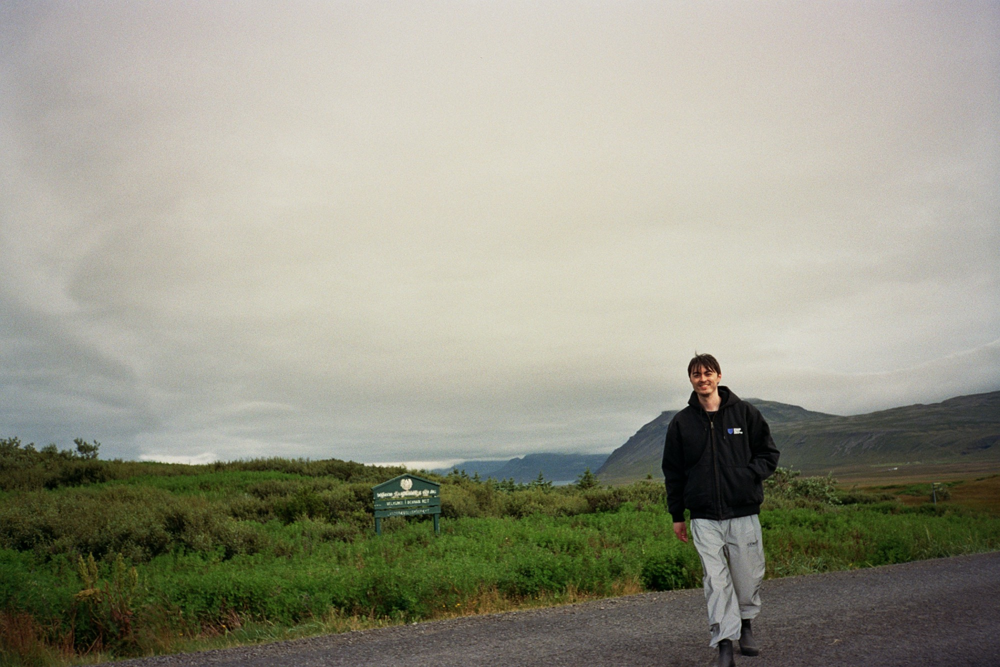

index.html // public
Mason Lynaugh
executive director · stand with crypto
atx dao cofounder. forbes 30 under 30, local austin.
ground game for 3m+ crypto advocates.

Press
01
"2026 is where we prove that the crypto voter is a defining constituency for the next generation."
Punchbowl News · Sep 2025
02
"The Clarity Act on the floor will be the most important vote that lawmakers have ever taken as it pertains to crypto."
The Block · May 2026

03
"This year crypto voters are poised to play a powerful and decisive role at the ballot box."
crypto.news · Consensus Miami 2026
04
"They overlook crypto voters at their own peril."
CoinDesk · Aug 2026
Links
- stand with crypto
- standwithcrypto.org
- x
- x.com/masonlynaugh
- linkedin.com/in/masonlynaugh
- github
- github.com/masonleenaugh
Also
- announcement
- stand with crypto names new executive director
- forbes
- 30 under 30, local austin